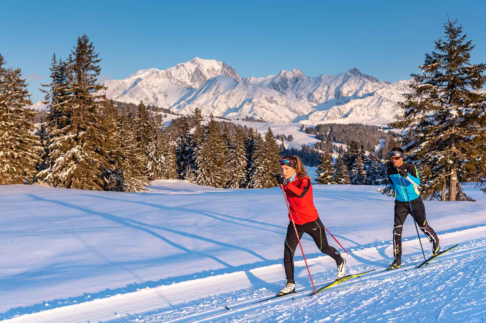
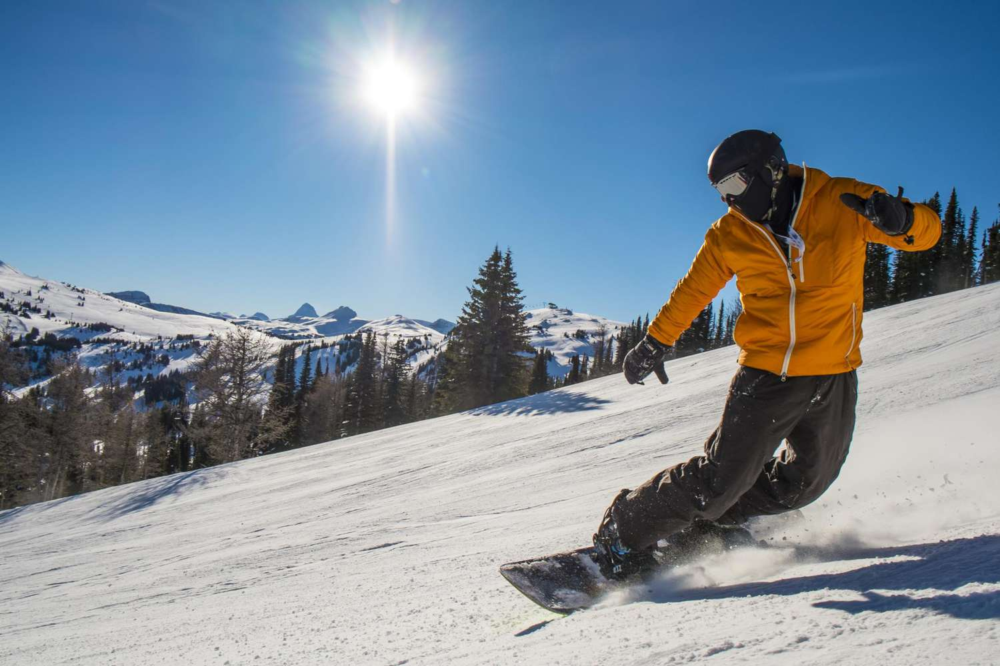

Ski alpin
Le ski alpin est une discipline de ski qui consiste à descendre des pentes enneigées à l'aide de skis équipés de fixations spéciales.

Ski de fond
Le ski de fond est une discipline de ski qui se pratique sur des pistes damées et relativement plates. Il est souvent utilisé pour la randonnée hivernale.
Snowboard
Le snowboard est un sport de glisse qui se pratique sur une planche de neige. Les snowboarders descendent les pistes enneigées en effectuant des virages et des sauts.
